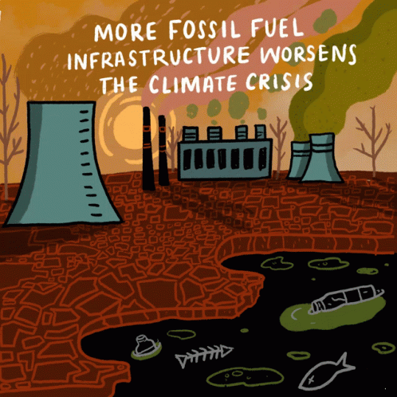
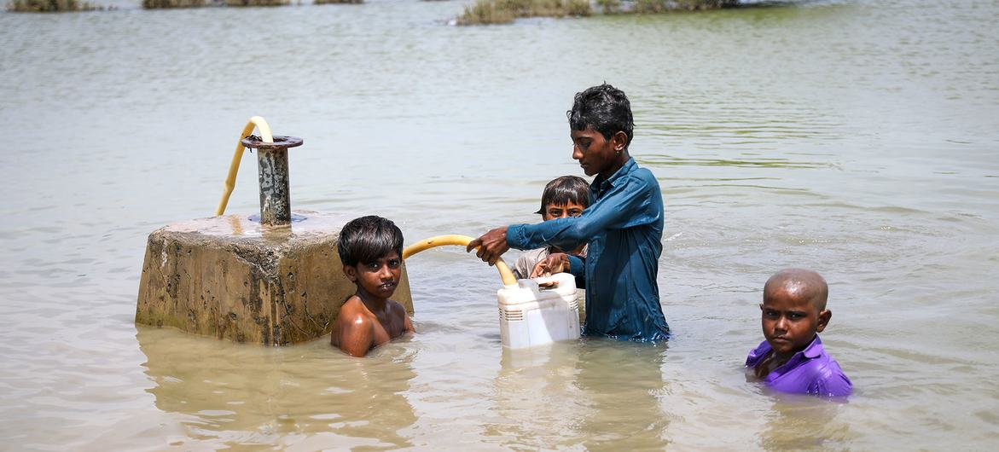

GLOBAL WARMING
Welcome to the blog of Dolapo Arogun
WHY SHOULD WE CARE?
Title description, December 4, 2022
It’s true that everyone is affected by climate change, but children and young people in Africa will bear the brunt in the coming decades, since the worst effects are expected mostly in the second half of this century. By the mid-century, in 2050, the continent will be home to one billion children who, given the right life chances, could power an African social and economic renaissance.
The climate crisis could scupper that. Over and above the direct impacts of floods, droughts, land and water conflicts, displacement and climate migration, carbon footprint, the consequences for employment, economic productivity and growth will be significant. Without meaningful action to reduce emissions in rich countries and to adapt development infrastructure and policies in Africa, declines in Gross Domestic Product (GDP) of up to 30 percent are predicted.

Investments in essential services for children, such as early and basic education, health, nutrition and social protection – from which future generations would reap the benefits – are likely to be sidelined as governments, international donors and private investors divert funds to climate adaptation and mitigation.

One of the speakers at the Africa Climate Week and COP 27, Dr. Joan Nyanyuki said “By the time the worst impacts of climate change are felt, many of those attending Africa Climate Week and COP 27 will be long gone. Despite their best intentions and calls for action, they have little skin in the game. It’s Africa’s children and young people who will be left to pick up the pieces as best they can. The sooner they are given a say in their own future, the better.” [Dr. Joan Nyanyuki, Executive Director of African Child Policy Forum (ACPF)]
Dolapo Arogun
Hello Children. My name is Dolapo Arogun. And I will like to take you on a journey to a cleaner energy future for mankind. Have you heard people on TVs talking about climate change? Ever wondered what it is and why we care about it so much? Well, I am here to help you understand what it all means, what is being done to address it and what we can all do to make a difference.
Popular Posts
-
 What is Global Warming?
What is Global Warming?
Global warming is the term used to describe the rising of the average temperature on Earth. It has to do with the overall climate of the Earth rather than the weather on any given day. -
 What causes Global Warming?
What causes Global Warming?
Greenhouse gases are the biggest factor contributing to global warming. It’s important to know that many of them occur naturally in the atmosphere. -

What are the effects of Global Warming?
Global warming is affecting life around the world and as a result, nature and wildlife are having to adapt to the new changes.

Tags
Travel New York London IKEA NORWAY DIY Ideas Baby Family News Clothing Shopping Sports Games